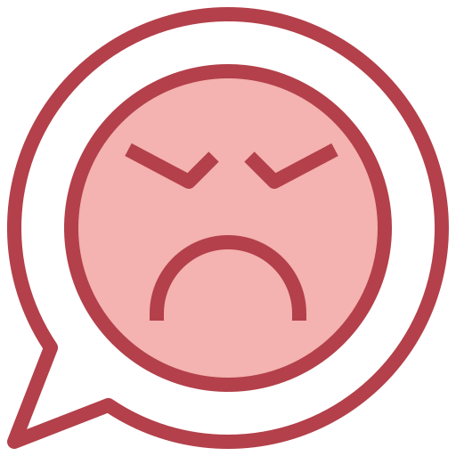

養鼠須知
(以上圖片出自：https://www.commonhealth.com.tw/blog/3856)
鼠的叫聲
鼠，又稱老鼠，即鼠總科，是一種屬於囓齒類的總科，其中含有倉鼠、沙鼠、大鼠，以及其他親緣動物。 牠們廣泛分佈於南極以外的各個大陸。由於難以測定各分類群之間的關係，因此也有文獻將所有鼠總科皆歸類在鼠科之下。 目前依據分子種系發生學研究所作出的次分類，共有約280個屬，以及至少1300個種。 牠們是少數與人類保持密切聯繫而繁盛的動物類群之一，這些動物幾乎在世界各國皆可發現， 其中有一部分也是重要的生物學模式生物，對人類的實驗與研究有很大的幫助。除此之外，某些鼠類也是寵物鼠。
新手第一次養貓該怎麼辦？需要準備哪些東西呢？可愛貓咪人人都愛， 但對沒養過貓的人來說，要真的跨出成為貓奴的第一步其實並不容易，很多人都說「養貓比養狗容易」， 因為不需要帶貓咪出去散步等等，但養貓仍有非常多需要了解的注意事項， 以下是今天要分享給各位的「新手貓奴全攻略」，馬上看下去吧！
養鼠需要準備哪些東西？
- 滾輪 最必須的東西！三線鼠建議可選直徑 17 cm ，黃金鼠建議可選直徑 21 cm，主要是要注意鼠寶跑的時候會不會凹背，會的話代表滾輪太小了。
- 倉鼠窩 建議夏天使用陶瓷窩，窩要比鼠寶更大，也建議選擇洞口大的窩，提升散熱能力。冬天建議可以使用木頭的，比較不容易失溫。
- 水瓶、飼料碗 可使用簡單的鋼珠水瓶，並使用小隻的奶嘴刷清洗， 給鼠寶喝之前先推看看鋼珠的部分，如果卡住就會有喝不到水的情況，水瓶可購買單個水瓶的款式就好。
- 飼料、水 飼料盡量不買有瓜子的，保存期限通常都比較短的關係，建議不要一次買太多，建議開封後放在冰箱，把當天要吃的分量舀出來、退冰在食用。
- 墊材 之前養三線時主要是使用木屑，但粉塵多、需要一直過篩。 之後養黃金鼠時就改用廚房紙巾了，好清理之外又很好取得 （手撕、用剪刀剪都蠻耗時的，建議可以添購一台簡單的碎紙機）
- 鼠廁、廁砂、沐浴沙 鼠廁建議可以挑選稍微大一點的，這樣鼠寶們在裡面轉身時才不會卡卡的。
- 保暖、降溫小物 冬天建議籠內溫度控制在 21 - 24度間，用夾式保溫燈罩，可以直接放在整理箱的烤肉網上， 不僅可以防止鼠寶燙傷、也可以有效的提升整理箱內的溫度， 若擔心溫度太高的話，可以添購控溫器、溫度計搭配使用。 添購保暖燈時，建議購買無亮光款式唷！ 夏天籠內溫度要控制在 28 度以下，因為鼠寶散熱能力非常不好，除了開冷氣給鼠寶吹之外，也可以搭配電風扇增加通風。
- 外出籠 沒有外出籠就不能去領養鼠寶跟外出看醫生了！
養鼠需要多少花費？

買別人打造好的整理箱大約800元、滾輪250元、便盆和浴室加起來約200元、 水瓶100元、其他家具（小窩、散熱板等）200元，合計約1,550元；其他消耗品，像是鼠砂、廁砂、食物、墊材等， 一個月平均大概100元；如果倉鼠需要看醫生拿藥，小生病的話大概幾百元至一千元，其實負擔並不會太大！
養鼠常見問題
- 如何判斷倉鼠生病？ 如果倉鼠精神、食慾不佳或體重持續下降，就代表需要看醫生了！倉鼠生病是很難被發現的，如果等到他表現出來，就代表已經相當嚴重，全台各地都有鼠醫院（醫院資訊），養了倉鼠就要對他負責，千萬別吝嗇帶他看醫生喔！
- 為什麼倉鼠白天都不太動？ 倉鼠其實算是夜行性動物，平常白天大部分時間都在睡覺，但還是會起床跑一跑。我之前養倉鼠時，晚上睡覺一關燈，我的三線鼠整個嗨起來，開始在籠子裡面狂奔跟跑滾輪。
- 為什麼倉鼠不會叫？ 倉鼠基本上是不會隨便叫的喔！通常尖叫和啾啾叫等，只有在打架、威脅、受到驚嚇或是生病才會發出聲音。
- 如何讓倉鼠跟飼主親近？ 倉鼠相當膽小，要靠近他時得慢慢來，如果他願意靠近你，也不要就想直接抓住他，可以先讓他聞氣味，用手餵他吃飼料等，久了之後他就會慢慢不被嚇跑啦！我的三線鼠已經養了一年多，有次剛從睡夢中醒來，看到我的手還是會咬，所以最好等他清醒了再接近他唷～
- 很長一段時間不在家，倉鼠怎麼辦？ 如果有與家人或朋友同住，請他們照顧是最好的；如果自己一個人住的話，也可以前往社團徵求別人照顧倉鼠，有看過送飼料當照顧禮，或是直接付錢請人照顧的都有。
養鼠的好處 & 壞處
- 養鼠好處
- 生活中多一個伴
- 學會打理生活
- 療癒身心、釋放壓力
- 學習生物常識
- 養鼠壞處 
- 倉鼠會啃咬電線
- 倉鼠被人踩到
- 出遠門較不方便
- 吃到一些奇怪的東西
養鼠的居家環境需注意什麼？
- 更換鼠砂和廁砂 檢查看看有沒有因為尿液而結塊的地方，如果有的話可以用小鏟子撈起來，再補充一些新的進去，大概3～5天全部換新的。
- 清除小窩裡面的東西 倉鼠會把墊材帶回家築巢，每次打開他的小窩就是滿滿的廚房紙巾，他們也會把沒吃完的食物帶回小窩，我也是大概3～5天整理一次他的小窩，順便把沒吃完的食物和紙巾都清掉。
- 清洗籠子和家具 大概一週要幫籠子和家具大掃除一次，我都會全部用清水洗過，把沾有尿液的地方刷一刷，擦乾水珠之後，再用酒精消毒一次，並再次擦乾到完全是乾的時，把家具裝回去，墊材補一補，再把倉鼠抓回來。 大掃除之後，倉鼠原本的氣味會被沖淡，倉鼠剛開始可能會不太習慣，只想躲在暗處或小窩裡面，這個算是滿正常的，過一下子他就又會活蹦亂跳囉！
勞贖的情緒
- 整理皮毛 倉鼠有兩種情況下會整理自己的皮毛：第一種情況，就是在放鬆狀態；另一種情況，就是在主人撫摸他們之後，鼠鼠想把自己的味道再塗到身上。鼠鼠是喜歡自己的味道！
- 耳朵向下 倉鼠耳朵向下表示他的警覺性很低，正處於放鬆狀態。當鼠鼠警覺時，他們耳朵一般都是豎得高高的，對周圍環境的微弱聲音非常敏感。
- 趴在地上 看見他們懶洋洋的樣子，就知道他們真的是非常滿足。
- 倦曲身體 鼠鼠酣睡的時候是倦曲身體，所以作爲主人看見這樣就最好別吵醒他們了！
- 爬到手上 鼠鼠心情好的時候也會爬上主人那裏哄哄主人。當主人伸手進籠子溫柔的叫鼠鼠的名字時，如果鼠鼠爬到主人的手上，就代表他們今天心情不錯！
延伸閱讀：想養天竺鼠嗎？那你更應該要知道這些事
延伸閱讀：倉鼠生寶寶後怎麼照顧？
延伸閱讀：鼠鼠咬人的原因？
- 相關影片馬上看
是否對養鼠有更多的認識？
有更了解還好
沒有幫助
還想了解什麼資訊？
歡迎分享
參考資料
https://www.commonhealth.com.tw/blog/3856https://zh.m.wikipedia.org/zh-tw/%E9%BC%A0
https://world.taobao.com/qingdan-amp/209854146918.htm
https://reurl.cc/kqpYmx
https://carolblogtw.com/keep-hamsters/
https://www.pttweb.cc/bbs/Gossiping/M.1543932432.A.3CD
https://www.commonhealth.com.tw/blog/3856
https://world.taobao.com/qingdan/220129793392.htm
https://www.flaticon.com/authors/surang
https://i.imgur.com/5ak1Fo4.jpg
https://memes.tw/wtf?template=3405